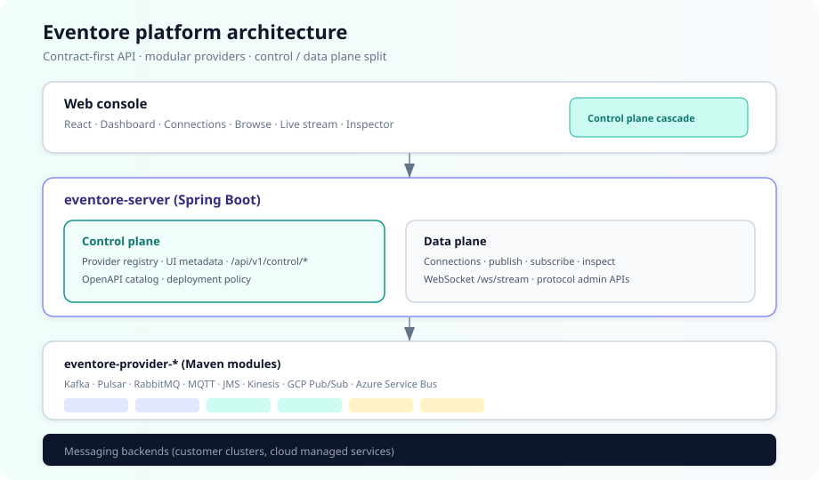

Multi-protocol
Kafka, Pulsar, RabbitMQ, MQTT, JMS, AWS Kinesis, GCP Pub/Sub, and Azure Service Bus — with cloud presets for MSK, Event Hubs, IoT Core, and more.
Connect, browse, live-stream, inspect, and administer messaging systems from a single UI — with a modular control plane and slim deployments that include only the protocols you need.
Kafka, Pulsar, RabbitMQ, MQTT, JMS, AWS Kinesis, GCP Pub/Sub, and Azure Service Bus — with cloud presets for MSK, Event Hubs, IoT Core, and more.
Register only the stream providers you deploy. The UI cascades capabilities from the control plane; the data plane handles all broker I/O.
Multi-topic WebSocket streaming with header/body regex filters, timed windows, and JSON, CSV, or NDJSON export.
Consumer groups, lag, message search, topic admin, ACLs, and produce with headers — when the Kafka module is enabled.
ADMIN, DEV, and READONLY profiles for production admin, safe development, and observability-only access.
Helm charts, ingress, optional network policies, and Maven profiles for minimal Kafka+Kinesis images.

Step-by-step guides, configuration reference, diagrams, and deployment examples.